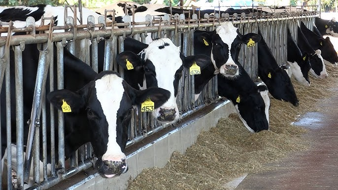
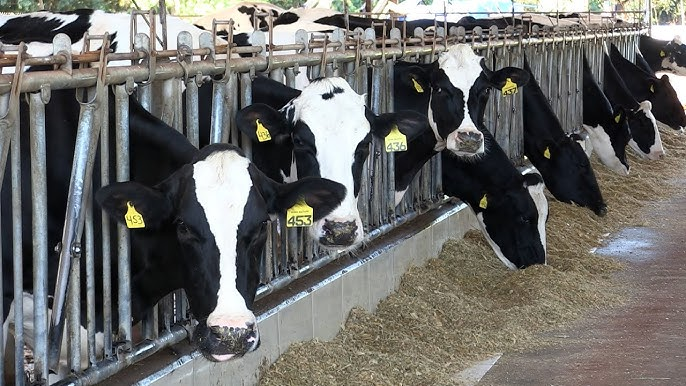

É a raça mais conhecida devido à sua capacidade de produzir grandes volumes de leite. Os animais são dóceis e de grande porte, com pelagem preta e branca ou vermelho e branca. Além da alta produtividade, possuem boa longevidade e fertilidade quando bem manejadas.